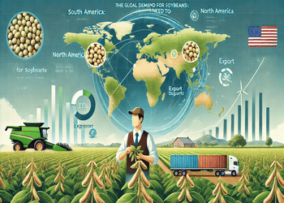

Improving agricultural products globally requires adopting sustainable farming practices, enhancing crop genetics through research and biotechnology, and utilizing precision agriculture technologies. Additionally, promoting efficient water management and reducing food waste can help increase productivity and ensure food security for growing populations. Collaborative global efforts and knowledge sharing are key to achieving these goals.
To achieve a global presence, agricultural products must meet international quality standards and regulations while ensuring efficient supply chains. Strategic partnerships with global distributors and targeted marketing can help expand reach. Leveraging digital platforms and adapting to local consumer preferences is key to successful global expansion.